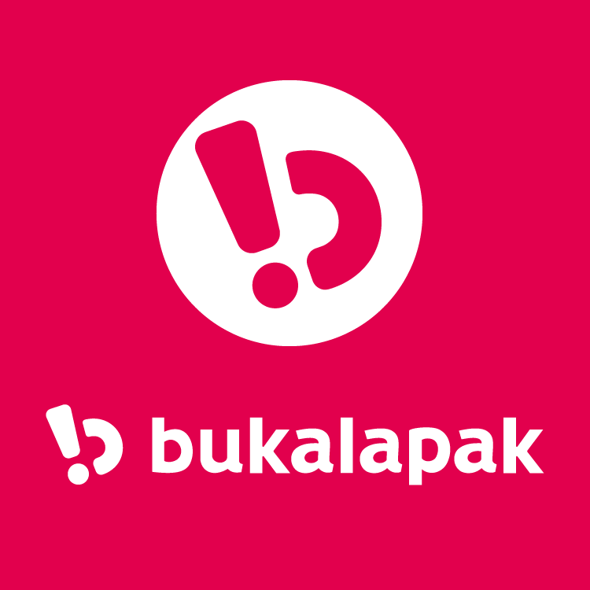
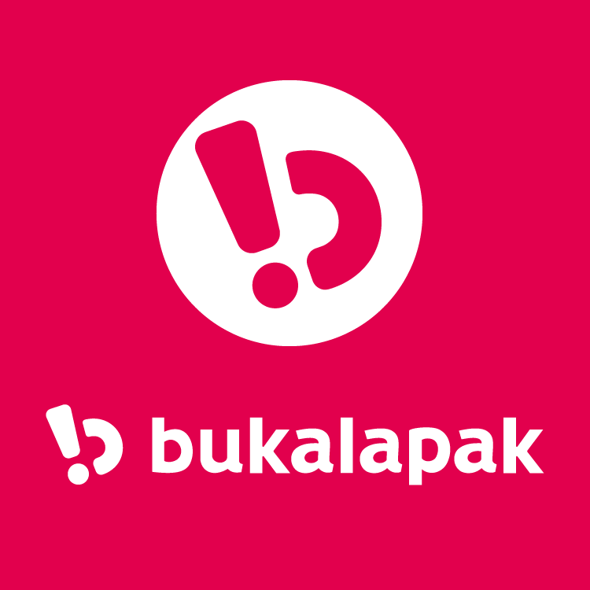

Apa itu HTML? Fungsi dan Cara Kerja HTML
Hostinger.co.id - Biasanya, penggunaan umum HTML adalah untuk menyusun bagian paragraf, heading, maupun link pada halaman web. Tapi, meskipun susunannya seperti coding, perlu diketahui bahwa HTML bukanlah bahasa pemrograman.
HTML tidak dianggap sebagai bahasa pemrograman karena tidak bisa memberikan fungsi yang dinamis. Sekarang, bahasa markup ini dianggap sebagai standar web resmi, dikelola oleh World Wide Web Consortium (W3C), yang juga bertugas merilis pembaruan rutin HTML.
Pengertian HTML dan Sejarahnya
Hypertext Markup Language atau HTML adalah bahasa markup standar yang digunakan untuk membuat halaman website dan aplikasi web. Sejarah HTML diciptakan oleh Tim Berners-Lee, seorang ahli fisika di lembaga penelitian CERN yang berlokasi di Swiss.
Versi pertama HTML dirilis oleh Tim Berners Lee pada tahun 1991, yang memiliki 18 tag. Sejak saat itu, setiap kali ada versi barunya, pasti akan selalu ada tag dan attribute (tag modifier) yang juga baru.
Spesifikasi HTML dikelola dan dikembangkan oleh World Wide Web Consortium (W3C). Berdasarkan HTML Element Reference milik Mozilla Developer Network, saat ini ada 140 tag HTML, meskipun sebagiannya sudah tidak lagi didukung oleh beberapa versi terbaru browser.
Bagaimana Cara Kerja HTML?
Ekstensi file HTML adalah .html atau .htm, yang bisa dilihat dengan mengunakan web browser apa pun (seperti Google Chrome, Safari, atau Mozila Firefox). Browser tersebut membaca file HTML dan merender kontennya sehingga user internet bisa melihat dan membacanya.
Biasanya, rata-rata situs web menyertakan sejumlah halaman HTML yang berbeda-beda. Contohnya, halaman beranda, ‘Tentang Kami’, halaman kontak memiliki dokumennya sendiri-sendiri.
Masing-masing halaman tersebut terdiri atas serangkaian tags (bisa disebut juga elements), yang tersusun untuk membentuk sebuah halaman website. Tag tersebut membuat hierarki yang menyusun konten hingga menjadi bagian, paragraf, heading, dan block konten lainnya.
Selain itu, beberapa contoh penggunaan umum HTML adalah:
- Pengembangan web. Developer menggunakan kode HTML untuk mendesain tampilan elemen halaman web di browser, seperti teks, hyperlink, dan file media.
- Navigasi internet. Pengguna bisa menelusuri dan menyisipkan link antara halaman dan website terkait karena HTML banyak digunakan untuk menyematkan hyperlink.
- Dokumentasi web. HTML bisa digunakan untuk mengatur dan memformat dokumen, mirip dengan Microsoft Word.
Kelebihan dan Kekurangan HTML
Sama seperti hal teknis lainnya dalam dunia web, bahasa markup ini juga punya kelebihan dan kekurangannya.
Berikut kelebihan HTML:
- Digunakan secara luas dan memiliki banyak sumber serta komunitas yang besar.
- Dijalankan secara alami di setiap web browser.
- Mudah dipelajari
- Open-source dan sepenuhnya gratis.
- Rapi dan konsisten.
- Menjadi standar resmi web, dikelola oleh (W3C).
- Integrasi mudah dengan bahasa backend, seperti PHP dan Node.js.
Kemudian, kekurangan HTML adalah:
- Umumnya digunakan untuk halaman web statis. Untuk fitur dinamis, Anda bisa menggunakan JavaScript atau bahasa backend, seperti PHP.
- Tidak bisa menjalankan logic. Alhasil, semua halaman web harus dibuat terpisah meskipun menggunakan elemen yang sama, seperti header dan footer.
- Fitur baru tidak bisa digunakan dengan cepat di sebagian browser.
- Perilaku browser terkadang sulit diprediksi. Misalnya, browser lama tidak selalu bisa merender tag yang lebih baru.
 
